blabla
blabla
|
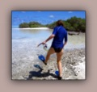 Aller à la plage - Le canard bleu, c'est Polly qui a décidé d'aller à la plage avec son matériel de plongée." /> |
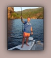 Déclamer - Lorsque nous sommes arrivés à Ua Pou, Philippe était tellement heureux qu'il s'est mis à déclamer du Virgile en latin. A ce jour, il reste le seul à avoir pratiqué la scansion sur le pont du bateau." /> |
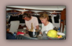 Faire la vaisselle - S'il y a bien une activité rébarbatrice sur un voilier, c'est la vaisselle. Une à deux fois par jour, d'abord à l'eau de mer, puis à l'eau douce. Heureusement, il est des invités charitables. Merci Pat et Mu pour ce soutien inespéré." /> |
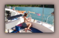 Lire sur le plat-bord - Je ne vous cache pas que lire est une activité très répandue à bord. On peut lire l'après-midi, sur le plat bord, comme Patrick." /> |
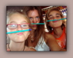 Faire la classe - Aider les enfants à s'instruire, quelle noble action. Et quand ça se passe dans la bonne humeur grâce à Christel..." /> |
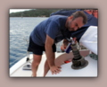 Réparer - Non seulement certains visiteurs sont habiles de leurs mains mais, en plus, il y a toujours quelque chose à réparer sur le bateau. Après s'être occupé des filières, Philippe répare les winches." /> |
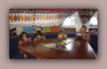 Lire en groupe - Toute heure convient à la lecture sur le bateau. Par exemple, avant le petit déjeuner, en groupe, en attendant que le commodore se lève..." /> |
|
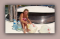 Faire de l'eau - Sur un voilier, faire de l'eau est une des activités récursives les plus en vogue. Les visiteurs sont toujours les bienvenus pour porter les bidons et les siphonner vers le réservoir de LET IT BE, pas vrai Mu ?" /> |
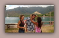 Dire adieu - Malheureusement, il nous faut aussi saluer nos visiteurs et nous séparer d'eux pour qu'ils puissent retourner au pays raconter nos exploits. On leur donne alors un collier et on pleure comme des enfants..." /> |
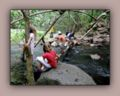 Traverser - C'est pas parce qu'on est sur un bateau qu'on ne peut pas visiter la terre. C'est lors d'une de ces ballades à Nuku Hiva que nous avons pris cette photo insolite où Patrick aide les enfants à traverser sur un tronc d'arbre..." /> |
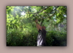 Cueillir - Chaque fois que nous descendons à terre, nous nous mettons en mode 'cueillette', scrutant chaque arbre dans l'espoir d'y trouver qui un avocat, qui une mangue, qui un citron, qui un lingot d'or, mais c'est plus rare. " /> |
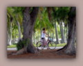 Faire du vélo - Polly est une sportive. Dès son arrivée, elle s'est évertuée à trouver des activités physiques variées. Ainsi en va-t-il de la bicyclette. Profitant d'une occasion impromptue, elle n'a pas hésité à enfourcher son engin afin de visiter le motu." /> |
Plonger avec bouteille - Venir aux Tuamotu et ne pas plonger avec bouteille, c'est un peu comme aller en Irlande et ne pas boire de Guiness: c'est possible mais c'est mal vu." /> |
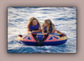 Faire de la bouée - Dans l'eau calme des lagons, la bouée se tracte aisément. Les deux cousines, Lucie et Syr Daria, en ont profité pour s'offrir un petit ride en toute tranquillité." /> |
|
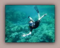 Faire du PMT - L'eau des lagons est généralement plus calme que celle de la mer qui l'entoure. Chacune des patates de corail qui parsèment le lagon est le siège d'une faune nombreuse et variée." /> |
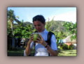 Les noix de coco - S'il est une denrée qui ne manque pas sous les tropiques, c'est bien la noix de coco. Comme Christel, on peut boire l'eau de coco à même la noix." /> |
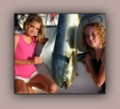 Pêcher - Entre Fakarava et Toau, nous avons ferré deux beaux Mahi Mahi. J'ai perdu le mien sur la jupe tribord mais Benoit a réussi à ramener le sien jusque dans nos assiettes." /> |
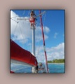 Hisser Cécile en haut du mât - Quand Cécile décide de s'élever pour prendre quelques clichés, il faut un volontaire pour la hisser en haut du mât. Généralement, c'est moi. Cette fois, Benoit s'est dévoué." /> |
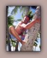 Grimper aux cocotiers - Quoi de plus naturel que de grimper aux cocotiers ? En fait, force est d'admettre que la photo est avantagée. En effet, à moins de peser 50 kg de muscles, grimper aux cocotiers à pieds nus est illusoire..." /> |
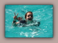 Tractanager - Ca, c'est vraiment génial: dans les lagons calmes, il n'y a rien de plus drôle que de se laisser traîner au bout d'un cordage derrière le bateau !!" /> |
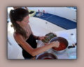 Faire à manger - Christel s'est installée dans le cockpit pour préparer des feuilles de vigne lors d'une traversée très calme dans les Fidji. " /> |
|
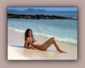 Bronzer - Les décors dans lesquels nous évoluons offrent de nombreuses occasions de glander au soleil en toute quiété. Nous, on est bronzé toute l'année mais nos visiteurs n'ont parfois que peu de temps..." /> |
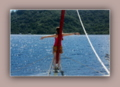 Etre le maître du monde - C'est précisément pour cela que l'on dispose d'un étai à la proue du bateau. Sans lui, impossible de tenir en équilibre et d'imiter Jack dans Titanic (d'un peu moins haut, quand même)." /> |
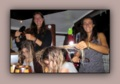 Ouvrir un salon de coiffure - Ben oui, même au bout du monde, on peut rester coquet(te). Malheureusement, eau salée et brushing ne font pas bon ménage, alors il faut entretenir sa chevelure." /> |
Boire - Voici une activité très pratiquée sur LET IT BE, que ce soit par nos amis de passage ou par le commodore. Pour l'occasion, voici Philippe débouchant une bonne bouteille d'eau pétillante, le jour de l'an, à Ua Pou, aux Marquises." /> |